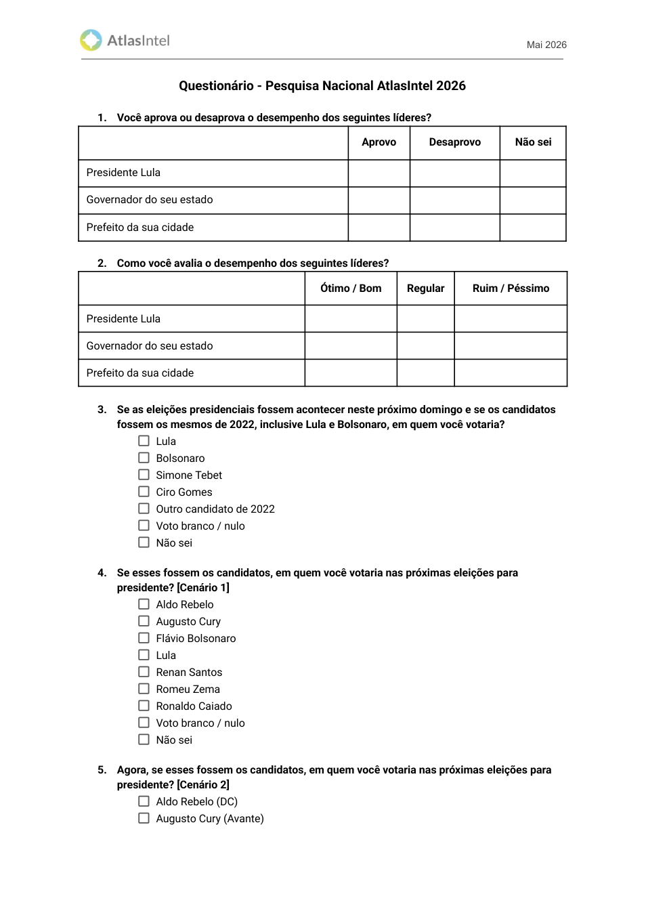
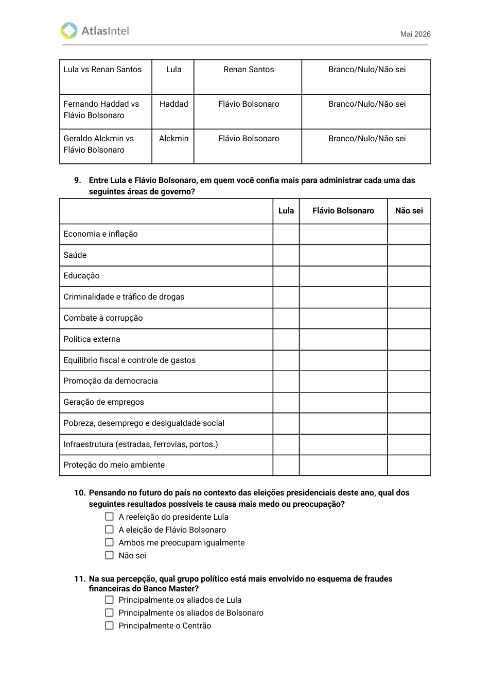
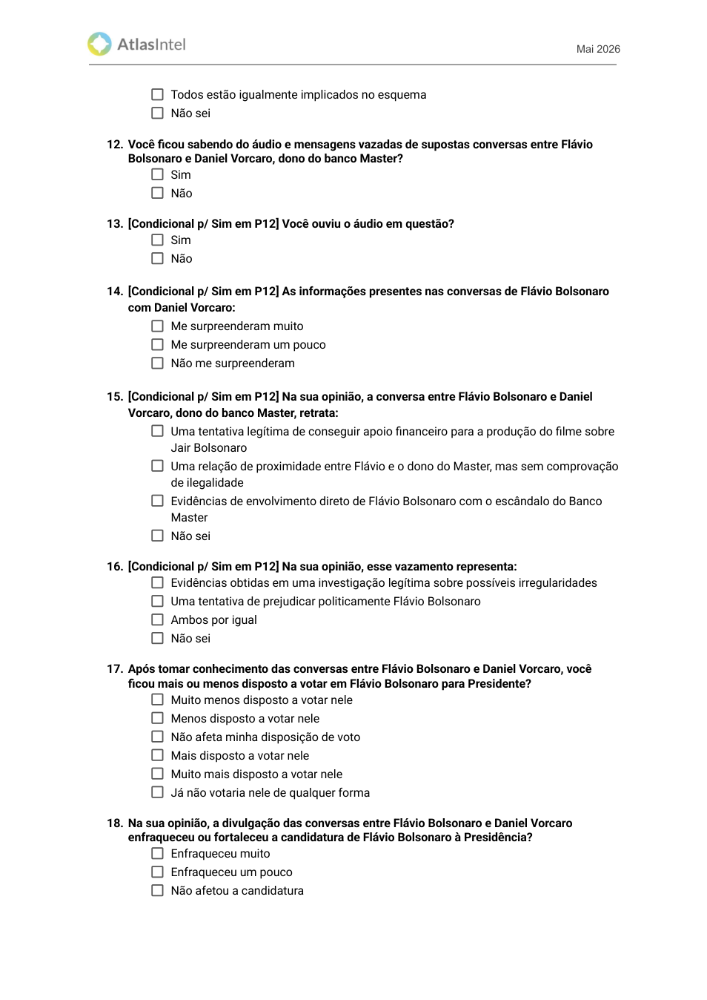
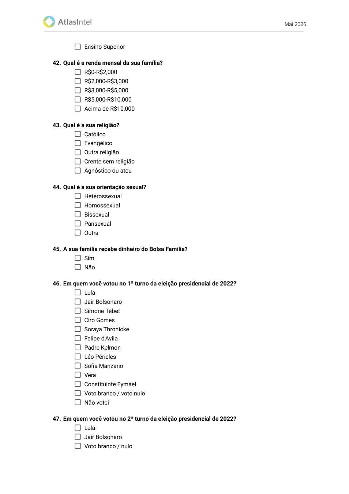
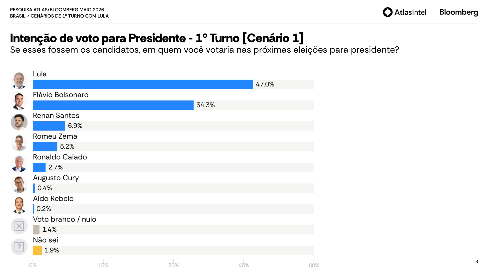
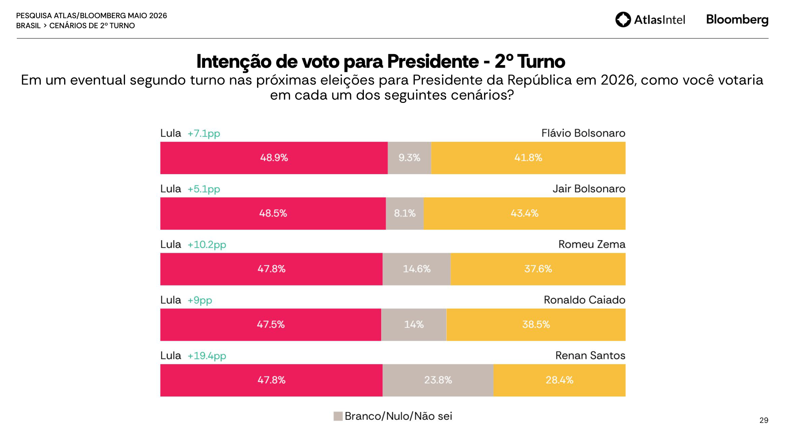
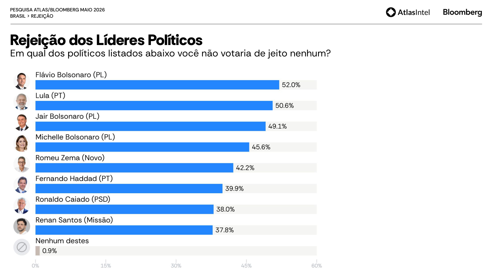
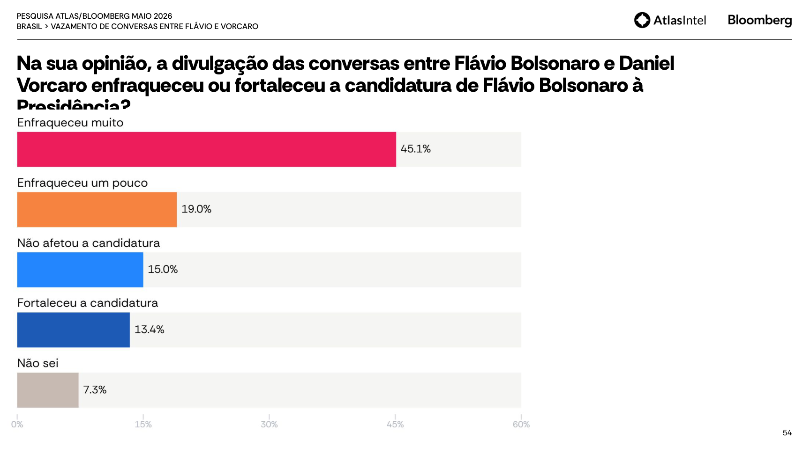
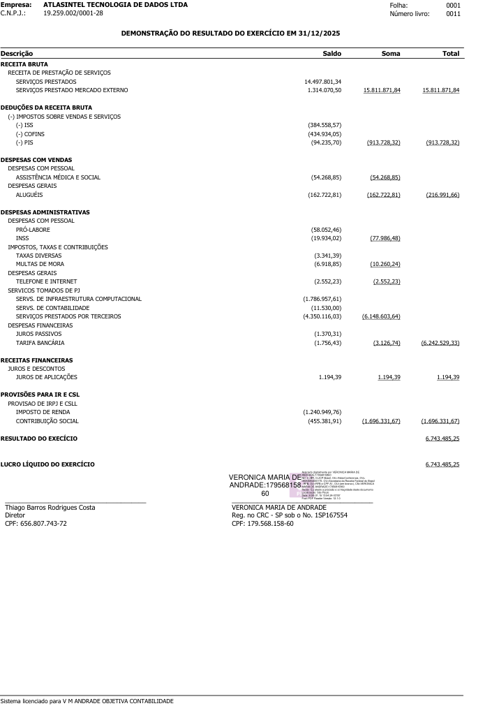

Mais protegido do que parecia
Aprovação, 2022, primeiro turno, segundo turno e confiança por áreas vêm antes do bloco explícito Banco Master e antes do vídeo/áudio.
Auditoria integral da pesquisa Atlas/Bloomberg: o instrumento mede voto antes do escândalo, mas depois mistura Banco Master, julgamento moral, imagem, rejeição, economia, demografia e vídeo/áudio. Esse desenho compromete bastante a qualidade interpretativa do relatório.
O questionário nacional revela uma separação decisiva: a intenção de voto aparece antes do estímulo audiovisual, então o top-line eleitoral não é contaminado pelo vídeo final. Mas o relatório vende também rejeição, medo, imagem política e leituras do caso Banco Master sem abrir todas as perguntas aplicadas. Aí a qualidade cai bastante.
Aprovação, 2022, primeiro turno, segundo turno e confiança por áreas vêm antes do bloco explícito Banco Master e antes do vídeo/áudio.
Depois do voto, entra uma bateria pesada sobre fraude, vazamento, envolvimento direto, candidatura de Flávio, problemas do Brasil, decisões de Lula, direitos sociais e economia.
O relatório traz os blocos eleitorais e Banco Master, mas não entrega resultados de várias perguntas aplicadas: problemas do Brasil, medidas de Lula, imagem de líderes, pautas sociais, partido, ideologia e economia.
Com n=5.032, a margem AAS a 95% no pior caso é ±1,38 p.p. Para ±1 p.p. seriam necessários cerca de 9.604 casos efetivos.
Sexo, idade e região ficam próximos do eleitorado TSE. A renda é defensável nas faixas da Q42, mas escolaridade superior segue inflada contra a PNAD.
Mesmo após o questionário principal, expor respondentes a peça audiovisual política transforma a pesquisa em experimento de reação. Sem protocolo completo, fica feio.
O instrumento nacional tem 48 itens. A ordem importa pra caralho: intenção de voto vem antes do bloco Banco Master, mas muitos indicadores publicados depois ficam sob sombra de contexto político pesado.




Não é só “tem pergunta demais”. O problema é a sequência, a carga semântica, a omissão de resultados e o uso de um vídeo político como peça final de avaliação.
A rejeição é Q25. Antes dela, o respondente já passou por Q11-Q19, uma bateria inteira sobre fraude financeira, áudio, envolvimento direto de Flávio e impacto na candidatura. Então rejeição de Flávio, Michelle, Jair e até Lula não é um número “limpo” de rejeição basal.
Q15 oferece a alternativa “Evidências de envolvimento direto de Flávio Bolsonaro com o escândalo do Banco Master”. Isso é pesado. Pode ser uma categoria legítima, mas deveria vir com estímulo/documento padronizado e protocolo claro.
Q48 pede avaliação contínua de uma peça audiovisual: “gravação de áudio enviado por Flávio Bolsonaro a Daniel Vorcaro, com imagens ilustrando os interlocutores e legenda”. Isso não é uma pergunta neutra; é exposição política.
Q42 pergunta renda mensal da família em cinco faixas, mas no PDF não aparece “não sei”, “prefiro não responder” ou “sem renda”. Para renda, isso é ruim. Forçar resposta pode distorcer justamente a variável usada para pós-estratificação.
Q40 pergunta cor/raça e Q44 orientação sexual. O relatório nacional analisado não mostra top-lines desses dados nem usa esses cortes de forma transparente nas páginas principais. Coletar variável sensível e não explicar uso é uma prática fraca.
Q20-Q24 e Q26-Q34 são blocos inteiros sobre problemas, decisões de Lula, imagem, direitos sociais, partido, ideologia e economia. Eles não aparecem como resultados no relatório principal. Isso impede avaliar o contexto mental criado antes das perguntas finais.
Isso é central. O relatório de 60 páginas parece completo, mas não é: ele publica intensamente voto e Banco Master, enquanto deixa fora blocos inteiros que foram aplicados aos respondentes.
| Itens | Conteúdo do questionário | Status no relatório Atlas/Bloomberg | Por que importa |
|---|---|---|---|
| Q1-Q2 | Aprovação e avaliação de Lula, governador e prefeito. | Publicado parcialmente: Lula sim; governador/prefeito não aparecem no relatório nacional. | Mostra que o questionário mede ambiente político local, mas o relatório entrega só parte. |
| Q3-Q8 | 2022, 1º turno e 2º turno presidencial. | Publicado. | É o bloco mais limpo, pois vem antes do Banco Master. |
| Q9-Q10 | Confiança por áreas e medo Lula vs Flávio. | Publicado. | Já começa a enquadrar disputa Lula-Flávio em termos emocionais e de competência. |
| Q11-Q19 | Banco Master, áudio, vazamento, efeito em voto e candidatura. | Publicado em grande parte. | Bloco central do relatório; muito carregado politicamente. |
| Q20 | Maiores problemas do Brasil, até 3 opções. | Não publicado no relatório analisado. | Seria essencial para saber se corrupção, saúde, economia ou segurança estavam dominando o frame do respondente. |
| Q21 | Decisões de Lula/governo: arcabouço fiscal, Gás do Povo, reforma tributária, IR até R$5 mil, Pix, Maduro etc. | Não publicado. | É uma bateria enorme de aprovação programática. Omitir isso tira a leitura de avaliação substantiva do governo. |
| Q22 | Imagem positiva/negativa de Alcolumbre, Leite, Haddad, Flávio, Alckmin, Motta, Jair, Janja, Lula, Michelle, Nikolas, Ratinho Jr., Zema, Caiado, Tarcísio. | Não publicado como bloco de imagem. | Absurdo editorial: imagem de líderes foi medida, mas o relatório destaca rejeição e cenários, não imagem completa. |
| Q23 | Aborto, maconha, cotas raciais, cotas trans, escola pública, autodeclaração de gênero. | Não publicado. | São variáveis de guerra cultural que poderiam explicar voto e rejeição. Sumiram do relatório. |
| Q24 | Partido de preferência. | Não publicado. | Sem isso, não dá para auditar partidarização da amostra. |
| Q25 | Rejeição de políticos. | Publicado. | Mas vem depois do bloco Banco Master, então especialmente Flávio está sob efeito de contexto. |
| Q26-Q27 | Ideologia e identidade política. | Não publicados como top-line no relatório analisado. | São variáveis-chave para validar composição política da amostra. |
| Q28-Q30 | Situação econômica, emprego, família, expectativas e compras de bens duráveis. | Não publicado. | O relatório fala de eleição, mas omite termômetro econômico detalhado. |
| Q31-Q34 | Inflação percebida e esperada em 6 e 12 meses. | Não publicado. | Para uma parceria com Bloomberg, omitir inflação subjetiva é especialmente estranho. |
| Q35-Q37 | Estado, município e bairro. | Não publicado como distribuição granular. | Sem geografia fina, não há auditoria de cobertura digital. |
| Q38-Q43 | Gênero, idade, raça, educação, renda, religião. | Publicado parcialmente no perfil/crosstabs; raça não aparece no perfil principal. | Demografia usada para controle precisa de top-line e targets claros. |
| Q44 | Orientação sexual. | Não publicado. | Variável sensível sem transparência de finalidade e distribuição. |
| Q45 | Bolsa Família. | Aparece como corte em gráficos, mas sem top-line nacional claro no relatório. | É variável social relevante e deveria ser auditável contra PNAD/CadÚnico. |
| Q46-Q47 | Voto no 1º e 2º turno de 2022. | Aparece como corte, mas sem distribuição completa de recall no relatório principal. | Como comportamento eleitoral anterior é target de pós-estratificação, omitir distribuição e pesos é grave. |
| Q48 | Peça audiovisual do áudio Flávio-Vorcaro com avaliação contínua. | Resultado divulgado em imagem pública no X; metodologia completa não aparece no relatório PDF. | É o ponto de maior risco ético e deveria ter protocolo próprio. |
O retrato político segue relevante: Lula lidera contra Flávio, Flávio é competitivo, e o caso Banco Master pesa negativamente. Mas agora precisamos separar melhor: voto antes do escândalo é uma coisa; rejeição e reação depois do escândalo são outra.




Para sexo, idade e região, a referência correta é o eleitorado mensal do TSE, porque a pesquisa é eleitoral. Para renda e escolaridade, a PNAD continua sendo melhor: renda não existe no cadastro eleitoral e escolaridade do TSE depende de atualização cadastral voluntária, então fica velha e enviesada.
| Corte | Atlas | TSE 05/2026 | Delta |
|---|---|---|---|
| Mulher | 53,2% | 52,8% | +0,4 |
| Homem | 46,8% | 47,2% | -0,4 |
| 16-24 | 10,9% | 12,3% | -1,4 |
| 25-34 | 19,4% | 19,1% | +0,3 |
| 35-44 | 20,4% | 19,9% | +0,5 |
| 45-59 | 25,9% | 25,5% | +0,4 |
| 60-100 | 23,3% | 23,3% | 0,0 |
| Sudeste | 41,8% | 42,1% | -0,3 |
| Nordeste | 29,0% | 27,6% | +1,4 |
| Sul | 13,8% | 14,5% | -0,7 |
| Norte | 8,1% | 8,3% | -0,2 |
| Centro-Oeste | 7,3% | 7,6% | -0,3 |
Base TSE: Eleitorado Atual, geração 01/05/2026 às 06:48:31, Brasil sem exterior. Idade usa apenas eleitorado 16+; sexo é normalizado em Homem/Mulher porque o perfil Atlas não publica “não informado”.
| Corte | Atlas | PNAD 16+ | Delta |
|---|---|---|---|
| Ensino Fundamental | 33,6% | 44,6% | -11,0 |
| Ensino Médio | 40,7% | 36,5% | +4,2 |
| Ensino Superior | 25,7% | 18,9% | +6,8 |
Aqui a Atlas mostra viés claro para escolaridade alta. O TSE tem escolaridade no cadastro, mas ela é ruim como alvo principal: muita gente conclui etapas de ensino e não atualiza o título.
Com o questionário correto, a pergunta é “Qual é a renda mensal da sua família?”. Portanto a comparação certa é com renda domiciliar total mensal da PNAD anual visita 5, não renda individual, não per capita e não só trabalho.
| Faixa mensal familiar | Atlas | PNAD adultos | PNAD responsáveis |
|---|---|---|---|
| R$0-R$2.000 | 22,8% | 19,9% | 26,2% |
| R$2.000-R$3.000 | 17,7% | 11,7% | 12,7% |
| R$3.000-R$5.000 | 22,4% | 26,7% | 25,7% |
| R$5.000-R$10.000 | 24,0% | 25,7% | 21,8% |
| Acima de R$10.000 | 13,1% | 16,0% | 13,5% |
A renda é menos absurda do que a escolaridade. O problema é Q42 não mostrar opção de não resposta, o que pode forçar chute em uma variável sensível. Raça também foi preservada na base TSE de referência, mas o arquivo atual tem 81,1% de “não informado”, então não serve como calibração racial pública forte; além disso, a Atlas não publica o top-line racial da amostra.
Q48 confirma o que era suspeito: houve uma peça audiovisual no fim, com gravação de áudio, imagens ilustrando interlocutores e legenda. Isso pode ser útil como experimento de reação, mas precisa ser tratado como experimento, não como apêndice casual de uma pesquisa eleitoral.
Se o vídeo veio após submissão das perguntas principais, ele não contamina diretamente os números de intenção de voto publicados antes. Mas ele cria um módulo experimental que exige transparência: quem foi redirecionado, quantos completaram, taxa de abandono, duração assistida, pesos, curva média e diferenças por subgrupo.
Sem isso, a Atlas fica numa zona ruim: mede a reação, divulga achados politicamente úteis, mas não entrega o protocolo completo. Para uma pesquisa eleitoral, isso é um baita problema.
A DRE da AtlasIntel Tecnologia de Dados LTDA em 31/12/2025 mostra uma empresa lucrativa, enxuta e com receita relevante. Isso não prova viés, mas ajuda a entender que a Atlas é uma operação comercial madura, não um laboratório acadêmico publicando tudo por transparência científica.
| Receita bruta de serviços | R$ 15.811.871,84 |
| Serviços no mercado externo | R$ 1.314.070,50 |
| Deduções de impostos sobre vendas | R$ 913.728,32 |
| Receita líquida aproximada | R$ 14.898.143,52 |
| Serviços tomados de PJ e infra | R$ 6.148.603,64 |
| IRPJ + CSLL | R$ 1.696.331,67 |
| Lucro líquido | R$ 6.743.485,25 |

A pesquisa ainda informa algo relevante sobre a corrida presidencial, mas o relatório não merece confiança plena como documento analítico completo.
Q3-Q8 vêm cedo. Esses números são os mais defensáveis: Lula lidera, Flávio é competitivo, direita sem Bolsonaro fragmenta.
Q9-Q10 vêm antes do Banco Master, mas já são formuladas como Lula vs Flávio. Medem comparação política, não diagnóstico neutro.
Qualquer coisa depois de Q11 precisa ser lida como pós-enquadramento Banco Master. O relatório não deixa isso suficientemente explícito.
A Atlas pode ter acertado tendências, mas o desenho editorial é frouxo: aplica 48 itens, publica só uma parte, omite blocos explicativos enormes e coloca uma peça audiovisual política no final. Isso não é “só detalhe”. Compromete bastante a leitura pública da pesquisa. O mínimo decente seria publicar matriz completa pergunta-a-pergunta, n por célula, pesos, targets de pós-estratificação, efeito de desenho e protocolo separado do vídeo/áudio.
Este dossiê foi preparado como publicação externa. As fontes abaixo identificam o que foi usado, sem depender de caminhos privados de máquina.